Workout success or failure starts well before you hit the start button on your device, sometimes days or weeks before the workout begins.
Executing a workout well requires a little grounding in training theory, aligning your life so the workout can happen, knowing what to do before, during, and after the workout without ruining it all at night.
Ready? You’re going to want to sit down for this.
Assumptions - Let's Get On the Same Page
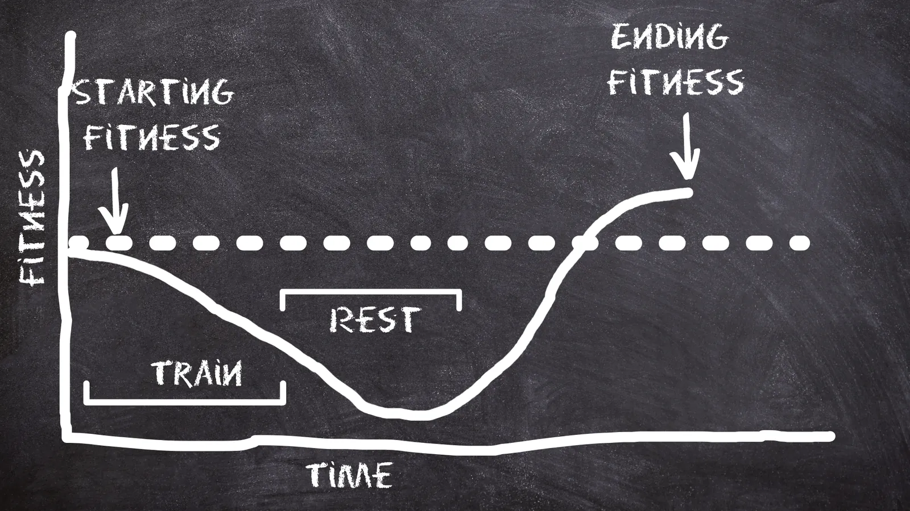
Recovery makes you fast
First, workouts break your body down; recovering builds it up. No one has ever gotten fit by training hard in and of itself. When you train, you’re creating the potential for adaptation, not adaptation in itself. To adapt, you need to rest (most of all, sleep). Through a fortunate physiological trick, your body doesn’t just repair the damage caused by training stress but builds you up fractionally better. Getting fitter is just the accumulation of this stress/rebuild cycle over time.
The recovery choices you make after a workout plays an equally important role to the workout itself in how much your body adapts to the damage created by training. If you don’t refuel, go out drinking, and then stay up late, yes, you will adapt, but not to the same degree as if you refueled, stretched, skipped alcohol, and went to bet early with good sleep hygiene. Think of it this way – poor recovery practices are the equivalent of skipping half of your intervals in your workout.
Athletes roll their eyes at this, but your lifestyle habits determine your health, which determines how much you can train and how much you can adapt to training. If you routinely trash yourself, your recovery and adaptive capacity will plunge, and you won’t improve that much.
You can imagine what that might imply – getting as fast as you could require lifestyle tradeoffs. It’s fine if you don’t want to do that, just don’t labor under the conceit that you’re somehow special and can train your way through your lifestyle choices like some people (cough cough Matti).
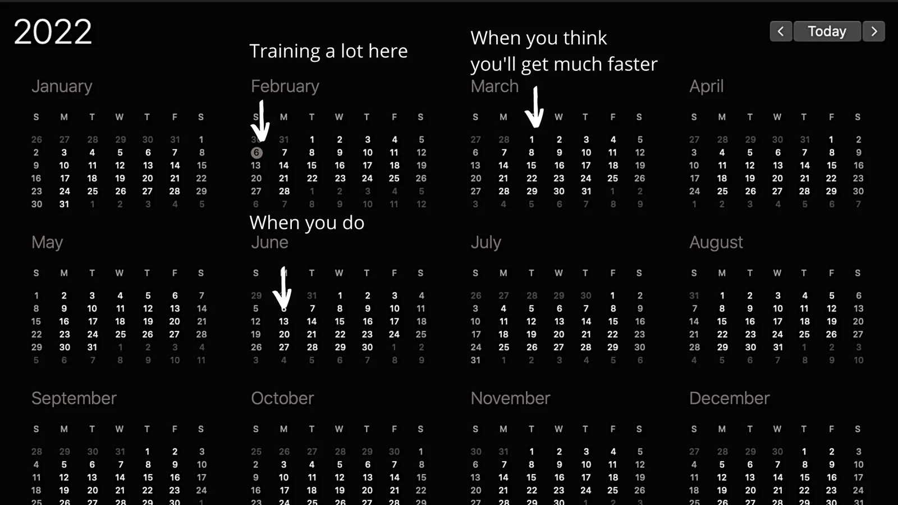
Lagging Outcome
All of that is an excellent segue into the next point – your fitness is the lagging outcome of your workout and recovery quality. For example, if you’re always missing a few intervals or cutting an hour off your long ride every week, even over a month, that adds up to a significant amount of potential training stress lost. Conversely, suppose you’re overdoing it every workout. In that case, you might be able to handle the extra fatigue for a week, or two, or even three. Still, eventually, you’ll be overwhelmed by training stress, and your body will fight back either by poor performance, sickness, or worst – injury. Whether you’re training too much, too little, or just right, your performance right now is the total sum of the training and recovery choices you’ve made in the past.
Let’s not forget the word ‘lagging’ from above, however. Whatever your training quality is, it doesn’t manifest in your body immediately; it’s delayed. For example, if you do a VO2max workout today, you’re not going to wake up tomorrow with a better VO2max, the day after that, or the day after that. Meaningful change is slow, so adjust your expectations. If this is frustrating, realize that nothing worth having comes cheap. If you want to see how fast you could be, you don’t need to set aside a few weeks of your life; you need years. If you’re curious about what that looks like, read about the Great Dane.
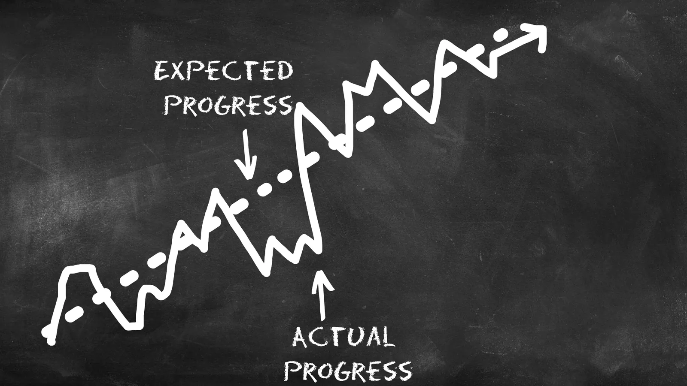
Not only is your fitness the lagging outcome of your training, but the degree to which you progress isn’t linear. Sometimes you’ll rapidly improve, sometimes you’ll go backward, but if you train and recover as best, you can over time, you will improve.
If this is confusing, think of the stock market. It’s generally accepted that the sure-fire best way to invest is for the long term, avoiding the temptations of short-term trading. Why? Because despite numerous nerve-wracking daily plunges and even recessions, long-term, the stock market has gone up by about 7% each year on average. Those gains are available for anyone to enjoy as long as they can hold their nerve when the inevitable downturns occur.
Think of training and recovery as a long-term investment in your fitness. As in any long-term investment, don’t expect dramatic returns yesterday. Instead, expect numerous variations in fitness progression around a slowly rising average.
Whenever someone asks me how much fitter they can get, I cite the Great Dane because he’s an excellent example of what fitness progression looks like in real life. His FTP increased 50 watts, AND he lost 20 pounds. Incredible, right? His improvement rendered his past self unrecognizable.
What’s missing in that statement is how long it took. For him, it took four years. Everyone wants everything yesterday, but it never works that way. You have to be patient. You have to set your sights on a further horizon and not expect to wake up tomorrow with world-class lungs and legs, but instead, another workout that will inch you closer to what you could be.
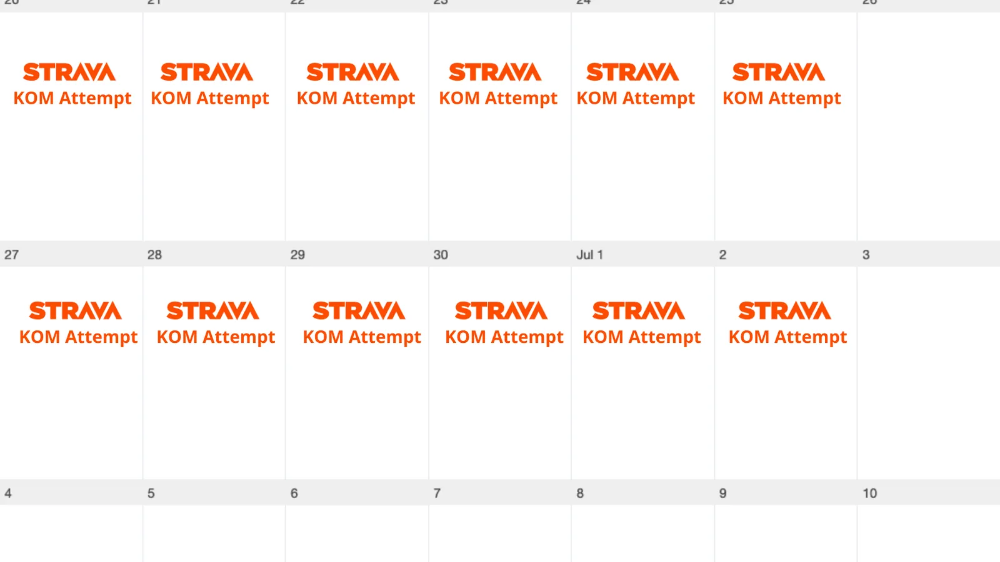
Searching for Answers
Further, no individual workout defines your fitness or your performance – you are your body of work, the collection of your performances over time. Maybe you’re flying one day and tap out 300 watts for ten minutes. Congratulations! Try it again the next day. Oh, now you could only manage 270! So what output is your ‘true’ you?
Your fitness is a moving average, and on any given day, your performance varies above and below that average due to the vagaries of fatigue, sleep, motivation, nutrition, hydration, etc. So if you have a great day, enjoy it, but don’t look too far into it. Equally, if you have a bad day, let it go, and don’t look too far into it.
If you internalize that your fitness is an average, not a day, you’ll stop committing a deadly workout sin I call ‘looking for answers .”Looking for answers’ means that you’re constantly trying to produce numbers in training that give you confidence that you’re fast. While harmless as the exception, if an athlete spends most of their workouts going too hard, they end up accumulating lots of fatigue and never performing to their potential.
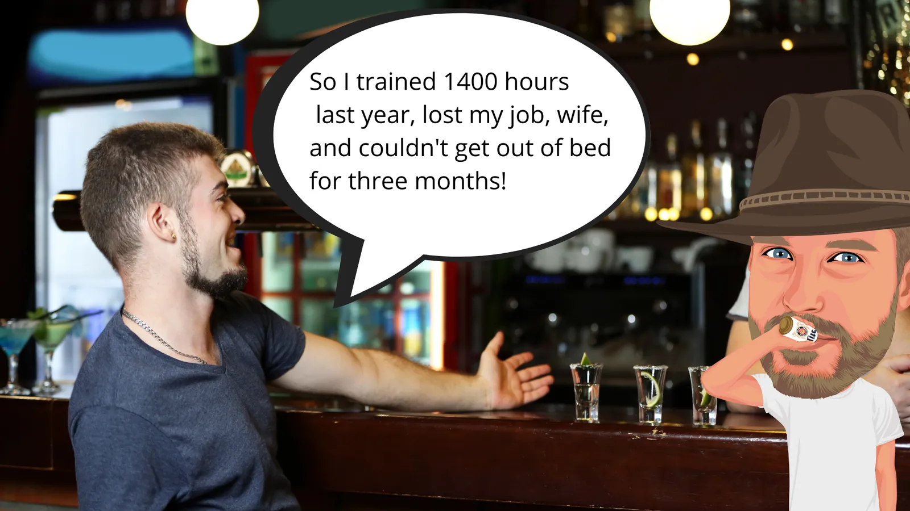
Overtraining
Lastly, any moron can overtrain. Many endurance athletes have a dangerous proclivity to glorify how much they train. Stop it – it doesn’t make you special. Most endurance athletes are motivated enough to go out, ignore their feelings, and do too much. Often, crushing themselves is a badge of honor, a sure sign that they’ve ‘really tried’ and are ‘serious’ and ‘dedicated’ to their sport.
Overtraining doesn’t make you dedicated any more than skipping your workouts makes you dedicated. Whatever the reason for overdoing it, don’t lie to yourself and pretend it’s because you want to be fast. Training too much makes you slow but makes you feel superficially good because you’re training a lot. Doing a lot of training looks like hard work but isn’t; it’s a cope to avoid what’s actually hard, which is training the right amount at the right intensity at the right time.
That takes restraint, not wild exertion. Everyone wants to throw haymakers; no one wants to learn how to parry.
The fastest way to the fastest you is straight down the middle of the road. The closer you ride to either edge, the greater the chance you end up in the ditch. You’ll save an incredible amount of energy and time in the long run if you stop pursuing shortcuts to your best self.
Got all that?
OK, are you with me so far? I recommend that you internalize the points mentioned above. Individual workouts don’t cause the majority of misconceptions and execution errors; training theory and process misconceptions and execution errors do.
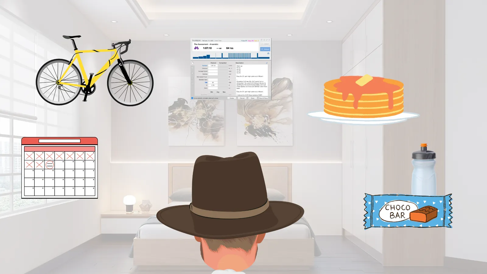
Before the Workout
Workouts start before you start them. Before you clip in you, have to get some things right even to have a chance at a good workout.
If you miss it, it’s your fault
You’re not going to like to hear this, but if you miss a workout, it’s always your fault. No exceptions.
If you miss a workout because you had to work late, it’s not your job’s fault you missed the workout – it’s your fault that you’re in a financial position that you have to spend a majority of your day working so much that it interferes with your ability to train.
If you miss a workout because of your family, it’s not your family’s fault you missed the workout; it’s your fault for choosing relationships so time-consuming that take away from your time to train.
If you miss a workout because you’re sick, it’s not the illness’s fault; it’s your fault for engaging in lifestyle choices that compromised your health and caused you to miss training.
If you don’t have objections to my last three paragraphs, you weren’t paying attention. While you could make a reasonable case against what I said in the previous three paragraphs, there’s a rule of thumb there you should take to heart – your fitness is your fault. That’s not true, but if you act like it is, you’ll miss fewer workouts.
Years ago, I missed my fair share of workouts, and I always thought I had good reasons for them. Sometimes I couldn’t do a workout for a legitimate emergency or sickness, but my perspective changed after an interchange I had with my coach.
“You missed a lot of workouts last month.”
“Yeah, my schedule got messed up here, and on that day…”
“Yeah,” my coach interrupted. “Shit happens. But you missed like seven days of training last month. If you think about it, it’s almost a fourth of a month. It’ll be hard to beat someone who’s showing up a lot more than you.”
A lot just happened there. First, my coach wasn’t interested in why I didn’t do the workout, which is funny because whenever I missed a workout, I spent a lot of time piecing together elaborate stories of why I couldn’t do them. But he didn’t care. He was just looking at the black and white reality on the TrainingPeaks calendar.
That’s powerful. I observe that many athletes can get caught up spending a lot of time justifying why they don’t do workouts. They justify it for one reason – it helps them feel better about themselves.
But the point of training isn’t to feel better about yourself – it’s to get fitter. You can skip an entire month of training and perform herculean feats of rationalization, feel great about it, but the underlying reality is that you’re getting slower.
Think of your workouts from a coach’s perspective. If someone else logged into your account and saw a lot of missed workouts, it would be a fair conclusion to think, ‘This athlete isn’t improving.
If the athlete was looking over the coach’s shoulder, they could say, “But, but, but this happened, and this happened” that could be understandable and legitimate, but the conclusion stands – the reasons don’t matter.
On race day, the organizer doesn’t give handicaps to racers according to their reasons they couldn’t get their workouts in. Everyone starts behind the same line at the same time regardless of their excuses. Whether you have good or bad reasons, your fitness is your fault.
Proactive versus reactive
You’re probably not paid to ride your bike, and if you are, you’re probably not being paid well.
Since riding your bike isn’t your livelihood, it’s fair to assume that cycling, while important to you, isn’t your number one priority. Congratulations – you’re a sane and balanced person.
However, if you want to miss fewer workouts, you have to reframe your relationship to workouts. Because it’s not your number one priority, it’s easy to get lazy whenever time gets tight and permit yourself to skip it. Before you know it, a pattern of workout dereliction emerges, and you’re missing a fourth of your workouts and yet somehow frustrated your fitness isn’t progressing.
To preclude this, adopt a proactive, aggressive strategy to your schedule. It’s helpful to imagine that the world actively wants you to miss your workouts; personify the world’s chaos into a foil that you have to outmaneuver.
In practice, this means looking ahead at your week and asking, “How is my week going to screw me out of my workouts?” If you think this way, you’ll tend to schedule and commit to things that increase the chance you’ll be able to get your rides in.
Without a proactive approach, you fall into a reactive pattern that feels in practice as if you were powerless. Days ‘get away from you,’ and things ‘happen to you, and you will tell yourself there’s nothing you could have done differently, but if you were proactive, you wouldn’t bomb so many workouts.
Preparing for the workout
Once you’re proactive with your schedule and giving yourself a chance to get your workout in, what are the next steps for success?
The success or failure of the workout starts the night before the workout. That’s when you want to make sure you’re getting enough sleep (especially if the workout is early in the morning), your equipment is dialed, and you’re giving yourself enough margin in your schedule to get the workout in.
Next, you want to read the workout. I know it’s the fashion these days to just upload the workout to your indoor software or training device and follow the prompts, but it’s actually essential to read and understand the workout, so you’re not confused about what you’re doing and why you’re doing it when you’re riding because of the workout’s potential nutritional and psychological planning implications.
For example, there’s a big difference in preparation between having a recovery ride and a 90 minute VO2 max workout. There’s also a massive difference between those rides and doing a five-hour ride with hard intervals in hot weather.
As a rule, the longer and more intense a workout is, the more you need to prepare yourself mentally and physically to give yourself a chance at success. I know this is obvious, but many, many times, I’ve seen athletes go into workouts underslept, underfueled, or seemingly unaware of a workout’s rigor and then become disappointed or surprised when it doesn’t go well.
I could send you a complicated spreadsheet of information on this, but these rules of thumb will get you 90% of the way there:
Before workout nutrition
- In general, match nutrition demands to workout demands. For example, if you’re doing a recovery ride, you don’t need to eat a Denny’s Grand Slam beforehand. Conversely, if you’re doing a six-hour ride with intervals, your breakfast shouldn’t be a big gust of wind.
- NEVER diet on the bike – no exceptions. When you’re riding, fuel it. Yes, there are exceptions, but I guarantee they don’t apply to you.
- In general, your body needs carbohydrates to perform and adapt to workouts ideally. Athletes go wrong because they mistake ‘I need carbs to go fast’ as a license to drown themselves in sugar. It’s more like – instead of three eggs and bacon for breakfast, have two eggs and some oatmeal – not three cinnamon rolls.
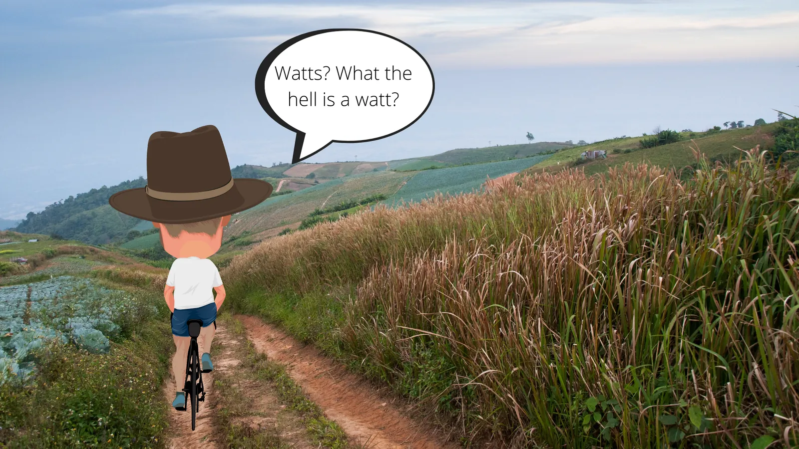
Executing the workout
Alright, it might seem like a miracle, but we’re finally training. You’ve managed your time, so you haven’t missed your workout, you’ve prepared for it properly, so how do you nail it not that you’re in it?
First, make sure you get in a good warm-up. Give your body a chance to wake up, suffuse with oxygen, and get ready for the work ahead. A common issue is to abbreviate a warm-up and dive head-first into an interval, and then it goes sideways.
Avoid that by starting your workout pedaling easy, nothing crazy, and gradually lifting from Zone 1 to Zone 2, keeping your cadence high. Your warm-up should be at least 10 minutes long, ideally 15.
Next comes the part where you’re rewarded for actually reading and internalizing the workout beforehand. Well, do it – and I mean do the workout. Don’t do a different workout, don’t cut intervals, or add intervals (unless otherwise specified) or go too easy, or go too hard – do what’s prescribed, dammit.
This is a great time to share a list of the most common ways athletes screw up workout execution by zone type:
The zones below, in one place
Training zones: intensity and dose
Click a column to sort. Each zone’s intensity line from this section, as the post writes it.
| Zone | % of FTHR | Dose per workout | |
|---|---|---|---|
| Zone 0 – Rest day | Literally none. | — | — |
| Zone 1 – Recovery | Less than 55% | <68% | — |
| Zone 2 – Endurance | 56-75% | 69-83% | — |
| Zone 3 – Tempo | 76-90% | 84-94% | — |
| Zone 3/4 – Sweet Spot | 92%-98% | 95-100% | — |
| Zone 4 – Threshold | 98%-105% | 98-105% | — |
| Zone 5 – VO2 max | 106%-120% | > 106% | 15 to 25 minutes |
| Zone 6 – Anaerobic capacity/FRC/W’ | 121%-151% | >106%just go hard because of heart rate lag | 8 to 12 minutes |
| Zone 7 – Sprint/pMax | Just send it. | — | — |
Zone 0 – Rest day
- % of FTP
- Literally none.
- % of FTHR
- —
Dose per workout—
Zone 1 – Recovery
- % of FTP
- Less than 55%
- % of FTHR
- <68%
Dose per workout—
Zone 2 – Endurance
- % of FTP
- 56-75%
- % of FTHR
- 69-83%
Dose per workout—
Zone 3 – Tempo
- % of FTP
- 76-90%
- % of FTHR
- 84-94%
Dose per workout—
Zone 3/4 – Sweet Spot
- % of FTP
- 92%-98%
- % of FTHR
- 95-100%
Dose per workout—
Zone 4 – Threshold
- % of FTP
- 98%-105%
- % of FTHR
- 98-105%
Dose per workout—
Zone 5 – VO2 max
- % of FTP
- 106%-120%
- % of FTHR
- > 106%
Dose per workout15 to 25 minutes
Zone 6 – Anaerobic capacity/FRC/W’
- % of FTP
- 121%-151%
- % of FTHR
- >106%just go hard because of heart rate lag
Dose per workout8 to 12 minutes
Zone 7 – Sprint/pMax
- % of FTP
- Just send it.
- % of FTHR
- —
Dose per workout—
FTP = functional threshold power; FTHR = functional threshold heart rate. Dose = the time in the zone the post gives per workout (“the effective dose of VO2 max work”; “in Zone 6, 8 to 12 minutes is PLENTY”); — = not stated. Long/Hard ‘Kitchen Sink’ workouts: usually all zones.
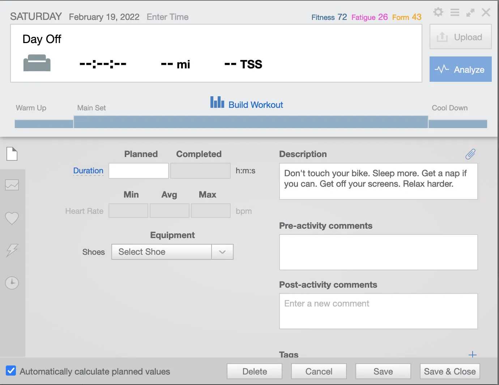
Zone 0 – Rest day
Intensity: Literally none.
How you will screw this up:
- You didn’t rest. You trained anyway and tried to deceive your coach by not uploading the workout. Stop it.
- You decided to start a new hobby like cement laying or masonry and spent the entire day in the sun without drinking water. It’s hard for cyclists to understand, but it’s possible to get fatigued doing other things than cycling.
- You slept 3 hours last night. You’re an athlete, not a 19-year-old visiting Ibiza on spring break.
- You had a bender. You know alcohol is poison, right?
- You spent all day doom scrolling. Get off your screen and go for a walk. Talk to people. Make dinner. Disconnect.
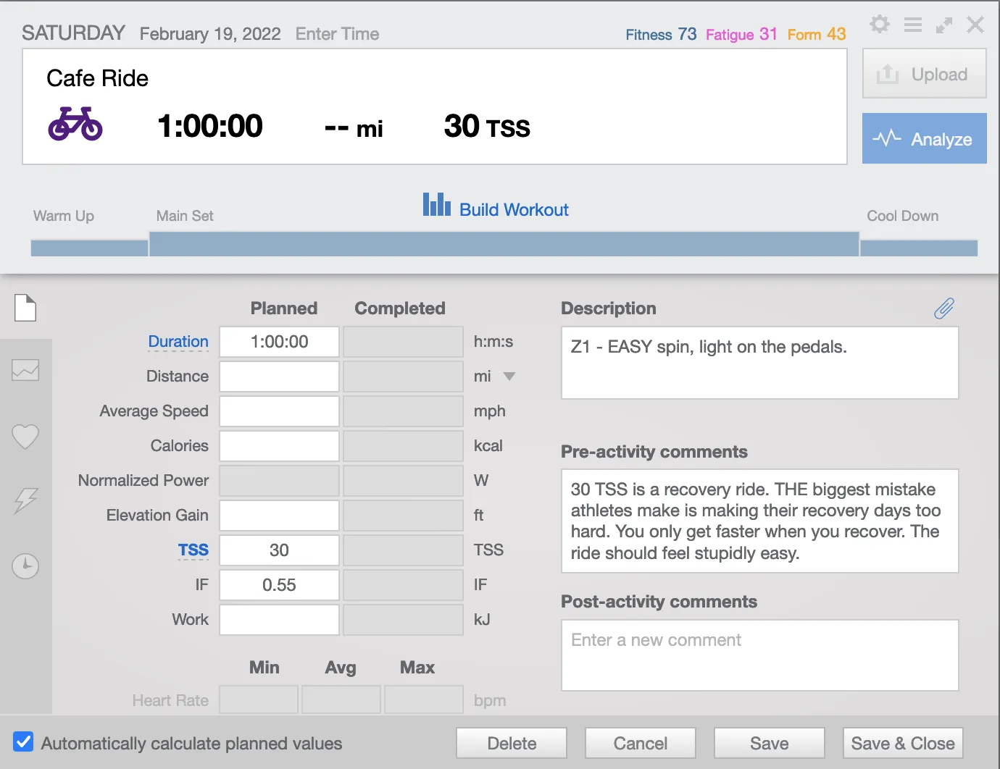
Zone 1 – Recovery
Intensity: Less than 55% of functional threshold power; <68% of functional threshold heart rate
How you will screw this up:
- You go too hard. Zone 1 is dumb easy; you should feel like you’re barely pedaling.
- You go too long. e.g., A three-hour-long recovery ride isn’t recovery even if you soft pedal.
- Another rider passes you on a recovery ride, and you briefly perform a race-winning sprint to get around them and peel off at the next intersection.
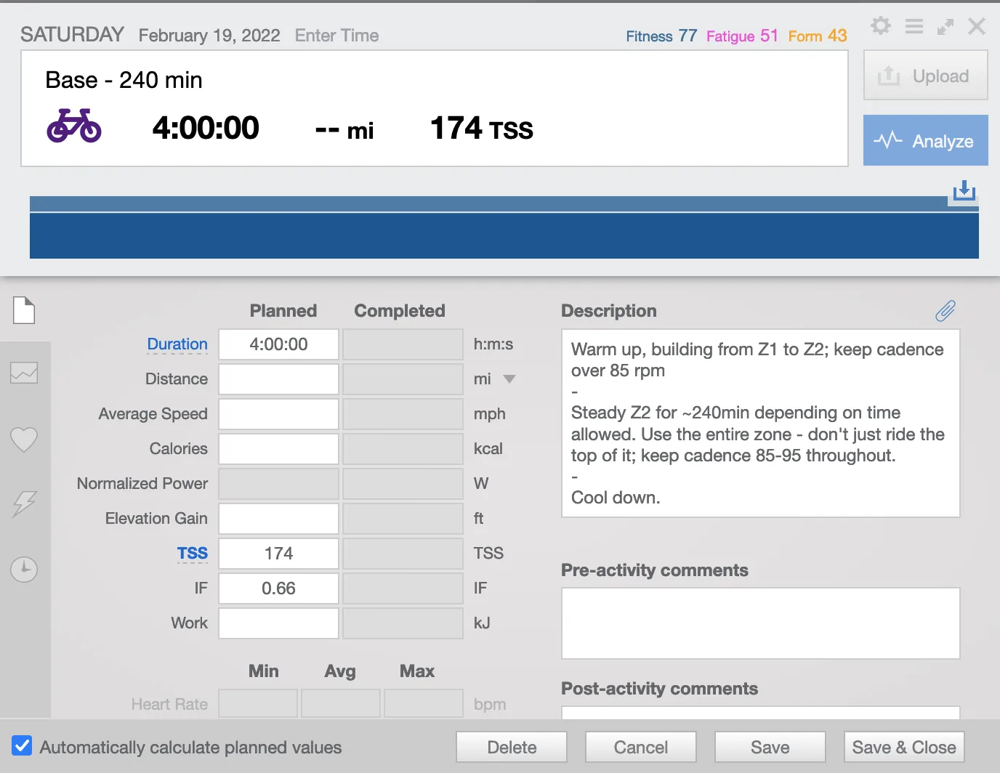
Zone 2 – Endurance
Intensity: 56-75% of functional threshold power; 69-83% functional threshold heart rate
How you will screw this up:
- The point of Zone 2 rides is primarily metabolic – to increase fat burning. To do this, you have to keep your intensity low. The more of your ride you spend near or over the top of Zone 2, the more carbohydrates you burn. If all of your Zone 2 rides are at the ceiling of Zone 2 or above, your ability to burn fat will be limited and hence your aerobic base will be poor, limiting your performance.
- The easiest way to make sure you’re not going too hard and burning sugar is to be aware of how you’re breathing. If you can’t breathe through your nose during most of the ride, you’re going too hard.
- You pedal the top of Zone 2 because you think that this optimizes the endurance adaptation. Reality? Accumulates lots of unproductive fatigue if chronic.
- You stop several times a ride for more than five minutes to take pictures, get coffee, go to the bathroom, send text messages, etc. Don’t do that. You’ll leave potential adaptation on the table if you’re constantly giving your body a break from riding.
- You were not eating or drinking because Zone 2 isn’t intense. Maybe not, but you’re nevertheless accumulating fatigue and depleting your fluids and glycogen stores. Long Zone 2 rides are an opportunity for you to train your gut to process calories and absorb liquids.
- You were riding with someone whose Zone 2 is your Zone 3/4. They’re chilling, you’re dying, and you just dramatically changed the nature of your workout.
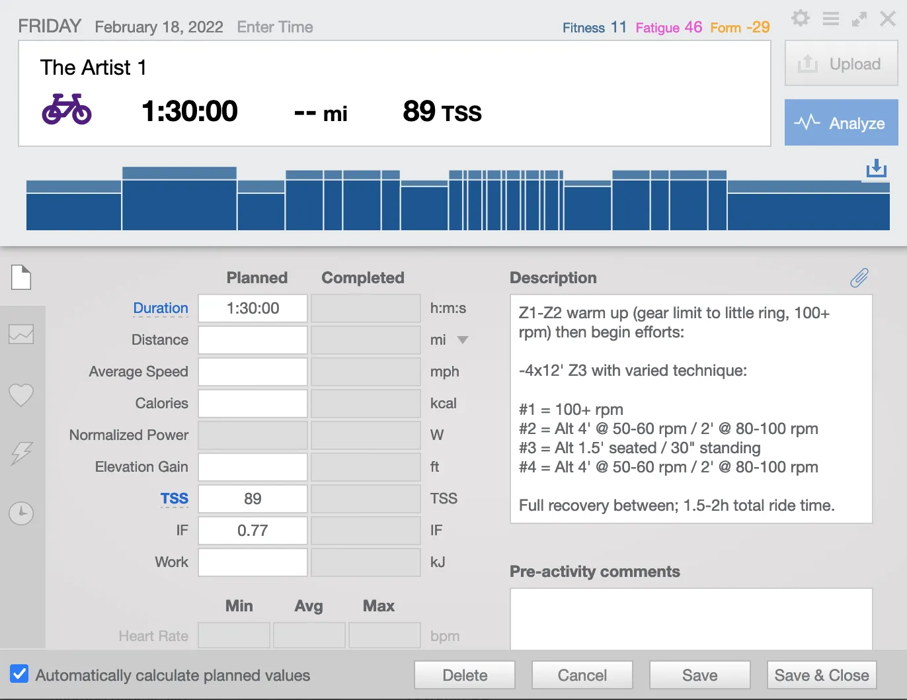
Zone 3 – Tempo
Intensity: 76-90% functional threshold power; 84-94% functional threshold heart rate
How you will screw this up:
- You try to push higher watts than Zone 3 for more training effect. That’s counterproductive. Training in Zone 3 is about increasing capacity, not speed, so if you feel good, accumulate more time in the zone, not more time above the zone.
- You were not making Zone 3 power in different ways. It’s easy to perform Zone 3 seated at your favorite cadence. However, you have to produce power to varying cadences in and out of the saddle in a race.
- You were not eating enough doing Zone 3 work. While Zone 3 work isn’t that hard to produce, it significantly increases energy and hydration demand, especially when added to a long workout.
- Zone 3 work can get addictive because it creates lots of training stress without a huge recovery penalty so it’s tempting to push lots of Zone 2 rides into Zone 3. Be careful. This shifts the stimulus to use more glycolytic muscle fibers and adds more fatigue than you expect. The closer you get to racing, the less time you want to spend in this zone because it affects your ability to go REALLY hard in Z4+ intervals.
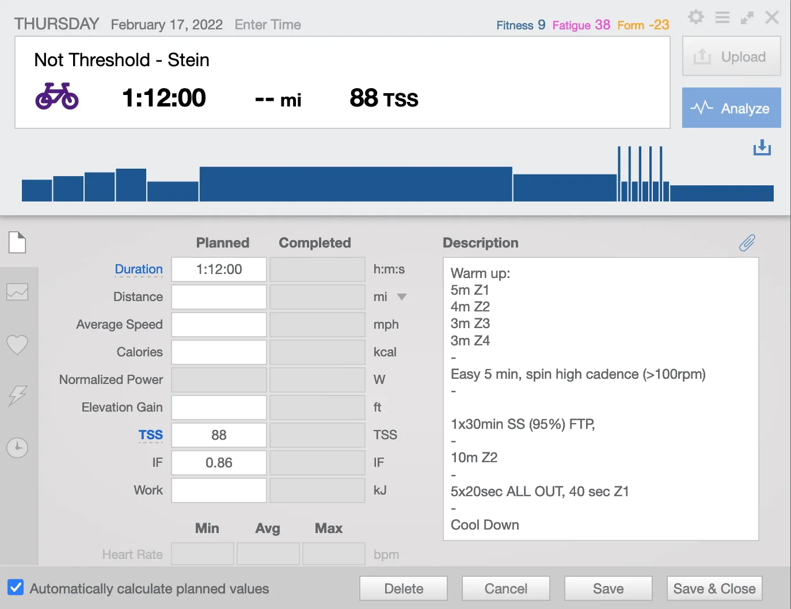
Zone 3/4 – Sweet Spot
Intensity: 92%-98% functional threshold power; 95-100% functional threshold heart rate
How you will screw this up:
- You are going too hard. The point of the sweet spot is to work underneath your threshold because it’s easier for your body to recover at an intensity under the anaerobic threshold. What you gain in training from workout pedaling is lost in long-term recovery requirements.
- You were not fueling correctly. Sweet spot burns a lot of calories fast and relies on glycogen. This isn’t a workout that plays well with dieting or low-carbohydrate nutritional protocols.
- You’re not focusing. Sweet spot intervals aren’t as hard as threshold intervals but they take focus. So focus; this isn’t the time to mess with your phone or answer calls it’s time to pedal.
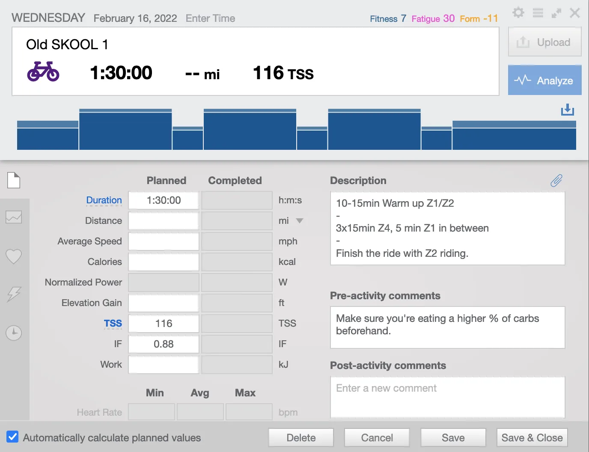
Zone 4 – Threshold
Intensity: 98%-105% functional threshold power; 98-105% functional threshold heart rate
How you will screw this up:
- You are going too hard. Even with threshold intervals, usually, the stimulus you’re looking for is time in the zone. If you view a threshold workout like a 20-minute test, your body might be done after one interval, and instead of getting 40 minutes + in zone, you’re only getting 20.
- Choosing only climbs for threshold intervals. Did you know you can create threshold wattage on flats, that you don’t need to find the steepest, nastiest climb every time you do an interval? It would help if you also did some threshold intervals on flats/rolling terrain. While your absolute numbers will probably be lower than if you did them on a climb, performing them in flat to rolling terrain is far more race-specific to the vast majority of racers and their events. It will force a cyclist to develop power over various cadence ranges and body positions they typically encounter.
- You’re underfueling. At threshold intensity you’re burning a lot of carbohydrates. This isn’t the time to do your workout fasted, or come into it dieting, or skimp on carbohydrate fueling. You’re revving your engine – feed it.
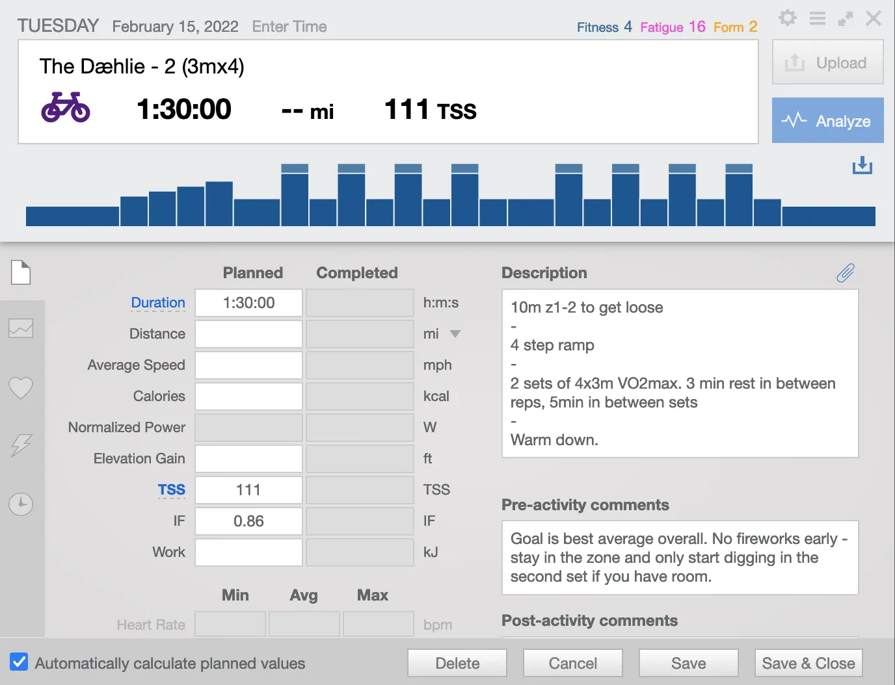
Zone 5 – VO2 max
Intensity: 106%-120% functional threshold power; > 106% functional threshold heart rate
How you will screw this up:
- You are going too hard in the first interval. Like threshold, the goal is the highest average power across the set, not the highest single interval with the remaining intervals below the zone.
- Unsteady power. When doing a VO2 max workout, you want the power to be relatively even for the duration, not way over or way under the wattage target within the interval. For example, averaging 350 watts for four minutes can be accomplished by basically holding 350 watts every second for four minutes or holding 400 watts for two minutes and 300 watts for two minutes. The former method spends all of their interval time at VO2 max; the latter spends two minutes in zone 6 and two minutes in zone 4.
- You are only doing VO2 max out of the saddle (or in the saddle). In races, you’ll have to make the power in different ways, so don’t fall into the trap of making the power in only one way in training.
- You are doing the intervals on an unknown stretch of road. You don’t want to be two minutes into your interval and then realize you’re on a 10 minute downhill. VO2 max is about work, not Instagram. Do them on the same stretch of road from the same place, so it’s easy to repeat.
- You are giving yourself too much time in between intervals. Unless otherwise specified, the recovery period in between intervals matters. Rarely will you see a VO2 max workout where the rest/recovery ratio is greater than 1:1.
- You are adding an extra VO2 max interval. High-intensity workouts are high risk, high reward. The effective dose of VO2 max work is somewhere in the department of 15 to 25 minutes. Doing more than that within any one workout has diminishing adaptation returns and steadily increasing risks.
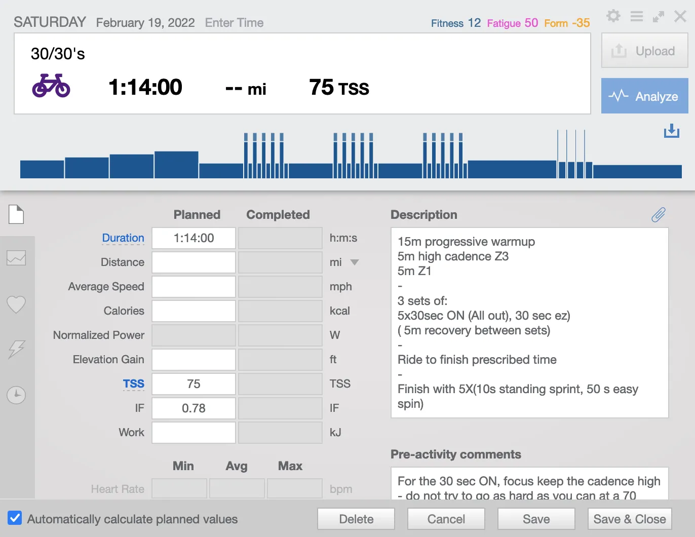
Zone 6 – Anaerobic capacity/Functional Reserve Capacity (FRC)/W’
Intensity: 121%-151% functional threshold power; >106% functional threshold heart rate/just go hard because of heart rate lag
How you will screw this up:
- You are not eating enough carbohydrates. Zone 6 work is mostly glycolytic work. If you’re tapped out on carbs, the work will be ugly.
- You fear sensation. Zone 6 workouts hurt, they burn, your legs will scream no matter how fit you are. It takes willpower to push yourself this hard so make sure you have some will.
- You increase recovery time. Most Zone 6 workouts involve violent, short bursts of pedaling with short recovery periods. You change the adaptation of the workout by lengthening the recovery period.
- Unsteady power. Like the VO2 max workout, you want to spend time in Zone 6, not Pmax and Zone 5.
- Low cadence. Zone 6 work demands high cadence (100+), not low. It’s easier to create peak wattages through cadence, not torque. If you doubt this, watch track racing and point me to the cyclist rolling around at 50 RPMs.
- You continue to do the intervals if you can’t hit the target. If you’re having a bad day on the bike, there’s no point in making these efforts if you can’t hit the target. Once you slip below the power band, the adaptation changes drastically.
- Like VO2 max, you’re playing with fire here. There’s a high risk, high reward, and a little goes a long way. In Zone 6, 8 to 12 minutes is PLENTY of time in the zone.
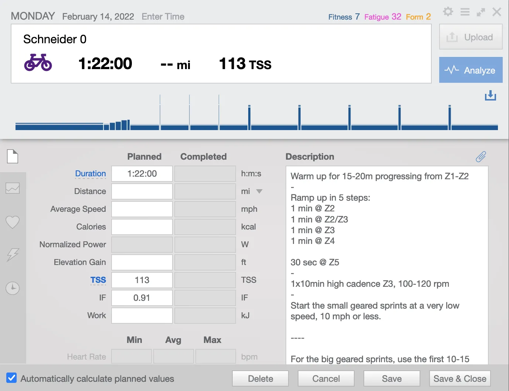
Zone 7 – Sprint/pMax
Intensity: Just send it.
How you will screw this up:
- You are looking at your power meter. Pmax workouts are sprints. Sprints are so short that looking down at your computer to see what you’re doing can eat up half of the interval time. Don’t look at your computer- just go ham – you can examine later.
- Low stoke. You have to get psyched up for this. Unlike lots of endurance training, sprints aren’t about holding back; they’re about ferocity.
- You think power = speed. The fastest sprinter develops the highest speed, not the highest watts. It doesn’t matter if you can rip 1500 watts for 10 seconds if you have the aerodynamics of a bus. There’s a tradeoff between power and aerodynamics, and you have to play around to find the best combination for you.
- Poor technique. Just because you’re not built like a track sprinter doesn’t mean you can’t sprint. For most cyclists, sprinting technique is the greatest limiter. YouTube has many videos on how to sprint – watch some and practice! You’ll be surprised what you can do.
- You are not resting enough between sprints. Unless the workout says otherwise, most sprint work needs to be done with a lot of rest in between efforts. Again, sprints require short bursts of violent effort – if your rest between sprints is too short or you’re cruising around at Zone 3 between sprints, that will sand off those last few percentage points of energy required to sprint well.
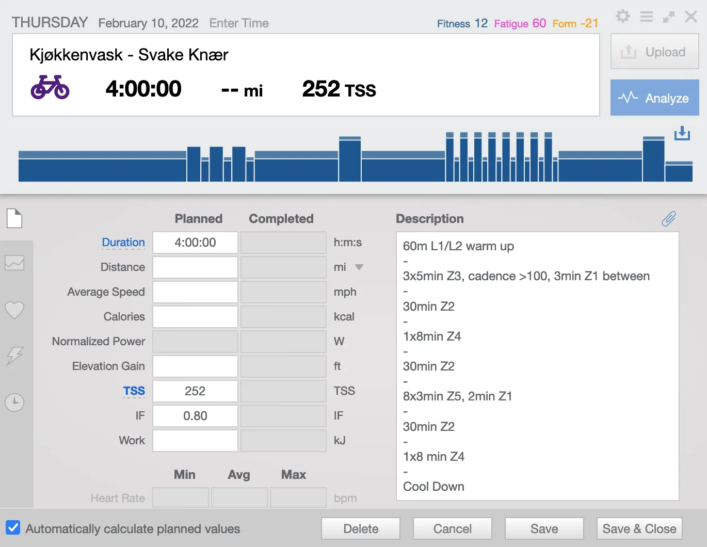
Long/Hard Workouts – In other words, ‘Kitchen Sink’ workouts
Intensity: Usually all Zones
How you will screw this up:
- By far, the greatest mistake athletes make in long, hard rides is not ingesting enough carbohydrates before, during, and after these rides. Not only is taking down enough carbohydrates vital to complete the training, but it’s also critical so you can adapt to the training. In practice getting sufficient carbohydrate intake is actually hard. During the ride, you want to have at least 50, but probably more like 70 grams of carbohydrate an hour. That’s the equivalent of three Cliff Gels an hour. So, over a five-hour ride, that’s having minimally 15 gels – gross, right? It might be gross, but it’s necessary. You might think you could get away with less, but that’s defeating the point of the workout – you’re not trying to survive the training; you’re trying to thrive from the training, so skimping on nutrition and walking through the door after the ride shattered and ravenous is counterproductive.
- You are not getting sufficient fluid/sodium intake. Like carbohydrates, to give yourself a chance at success in this ride, you need to come into the ride fully hydrated. That doesn’t just mean having water; you probably want to preload some sodium as well. During the ride, drink at least a water bottle an hour and 500 mg sodium, having more sodium if you have a high sweat rate. After the ride, have at least 1000 mg sodium in 24 oz of water. If this sounds wild, realize that most athletes begin dehydrated, ride dehydrated, and recover dehydrated. Your body doesn’t optimally perform or adapt dehydrated, so stop getting dehydrated.
- When you train in the extreme, recovery must be extreme if you want to get the most from adaptation. However, many people fall prey to the ‘moral licensing’ fallacy here – they allow themselves to do something bad because they’ve done something good. (I’m REALLY guilty of this) e.g., I rode for six-hour, so that means I can eat an entire box of cinnamon toast crunch and drink a six-pack of Miller Lite. Look, it all counts. You don’t have to be perfect, but don’t make the mistake of thinking physical extremes cancel out other choices.
Sensation versus Pain
Moving on – how should you feel when you’re training? Honestly, the vast majority of your training should feel comfortable. You’re an endurance athlete, and most endurance training is at an easy, sustainable intensity where you’re exerting yourself but not to the degree that you couldn’t sustain an involved conversation. No pain, no gain mentality holds only in the short term for the untrained. In the long term, inevitably, an athlete will plateau as they accumulate more stress than they can adapt to.
During intervals, however, you should be uncomfortable. Training stress causes damage, and the feeling of that damage is sensation. Like most endurance training, however, most intervals are not all out. The goal of all workouts is for an athlete to accumulate time at different intensities to produce specific stress. One can accumulate plenty of productive, specific stress without emptying the tank.
Rarely, workouts call for an all-out effort. Sensations in these workouts are hard to sustain and require as much physical effort as mental effort.
Notice I referred to the exertion of an all-out effort as sensation, not pain. The sensation is the feeling of exertion or effort, not something to be confused with pain, which is a feeling of harm or injury. For example, heavy breathing and burning legs are normal sensations at the end of a hard interval; sharp pain in your knee or back is not.
The sensation is normal and expected; pain is abnormal and something to avoid. ‘Suffer-porn’ culture in endurance sports often confuses athletes into thinking they need to be able to sustain pain to be successful. That’s a confusion in terms. Suffering is enduring sensation, not pain. Enduring pain leads to sickness and injury, not progression. Tolerating pain for the sake of tolerating pain is a cope, the easy way out of taking the harder path of restraint.
Nutrition and Hydration
Another thing to be mindful of during training is your nutrition and hydration. Just as you may have had to preload sodium and carbohydrates before your workout to ensure you were fully hydrated and your glycogen stores topped up, if you’re doing lots of intervals and riding for a long time, you’ll deplete those and fall apart if you don’t keep on eating and drinking.
How much? Here are some helpful guidelines:
Peri-workout nutrition (during the workout).
- Anything under 90 minutes that’s low intensity and not hot doesn’t require supplementing sodium carbohydrates. You could have some sodium or a bite of a bar/gel, but it’s not strictly necessary.
- Anything equal to or greater than 90 minutes to about two hours with the intensity you should consider having 500-1000 mg of sodium and about 50-75g of carbohydrate per hour.
- Anything workout 2 hours or greater have at least 500-1000 mg of sodium each hour and 50-75g of carbohydrate per hour. If you’re riding in hot weather and doing lots of intensity, have more sodium than usual and eat up to 90g of carbohydrate per hour.
Psychology
Before discussing post-workout best practices, let’s touch on psychology during the workout, starting with expectations.
Realize that some workouts are going to go well; others won’t. As I mentioned before, you are not your performance on your best day; you are the average of your performance. You should expect that most days you’re going to have an average performance.
Of course, be open to the possibility that you might have a great day, but realize that performance is a complex, interdependent phenomenon wherein physical and psychological factors combine at the right moment to produce an output. In other words, if you can’t hit specific numbers, it’s not because you didn’t want it bad enough or couldn’t will yourself to do it – if you’re not fit enough, it’s not going to happen. Conversely, if you’re fit enough but can’t achieve the requisite psychological arousal state to handle sensation, it’s also not going to happen. Overall, don’t take your performance, good or bad, personally.
Athletes commonly have a bad workout and then get down on themselves and compensate detrimentally. For example, maybe they had VO2 max workout to do, didn’t hit the numbers, and then decided to ‘punish themselves by adding another 90 minutes of hard(ish) riding to their ride.
That’s counterproductive. The goal of the workout was time spent at a high intensity which they couldn’t sustain, probably because they were tired. Instead of rolling home and resting, they added more fatigue to an already fatigued system. Now they’re even more buried, and it will take them longer to get fresh enough to perform at that high intensity again.
Above all, the best athletes avoid defining themselves by any one day. Instead, they look to the trend of their fitness and move on from a workout, good or bad, without overcorrecting.
After the Workout
You’ve pulled back into the garage, and now your workout is over. Time to shut off your brain and move on? HAHAHAHAHAHA!!!
Everything I’m about to suggest assumes you’ve programmed a little buffer into your workout time. If you don’t have this time, that’s understandable. Consider the following as best practices you can strive toward.
Take Care of Your Bike
Immediately post-workout is a great time to do a little preventative maintenance on your bike. Most of you will ignore this advice which is fine as long as you’re not upset when your bike fails you when you need it to work the most:
- Always leave your bike in the little ring and little cog. It takes all tension out of cables and springs.
- Take a clean rag and wipe off your chain and chainrings after each ride.
- Wipe down jockey wheels when you clean the chain and chainrings. Dirt on your frame will not thrash as much as dirt on your drivetrain. Focus on cleaning the drivetrain after every ride. That prolongs the life of all components.
- Very lightly lube the chain after you wipe it down. Let it sit for 30 seconds, and then lightly wipe off the excess.
- Take a clean rag and wipe the frame down if there is shit on it. Never use the same rag for chain and frame.
- Wash bike if ridden in bad weather (or muddy gravel).
- Check tires for glass or other shards. Remove if needed. This will prevent untimely flats.
- If something feels wrong, something is probably wrong. Don’t ignore it, and then act surprised when your bike fails while you’re riding.
Do Mobility Work
Then, mobility time. Mobility work is something most cyclists skip for years with no consequences until they develop sharp pain and limitations when they ride and then have to spend months and years slowly changing their strength through a range of motion from a two by four back toward something vaguely athlete. Ten minutes after every ride can go a long way. Start here.
Refuel/re-hydrate, or Not
Next, rehydrating/refueling. The extent to which you need to rehydrate/refuel depends on context. Contrary to the knowing admonitions of popular training articles, you’re not going to leave knee-cap your recovery if you don’t drink chocolate milk immediately after every workout. The glycogen window theory of enhanced glucose synthesis if you consume a four to one ratio of carbohydrates to protein immediately after training is alarmist and shouldn’t be blanket advice. As ever, context matters.
For example, if you’ve just done an hour of easy endurance riding, you don’t need a recovery cocktail immediately after waking up the following day ready to train. Conversely, skipping the recovery cocktail after a five-hour ride with high-intensity intervals with another hard workout waiting for you tomorrow isn’t a bright idea and will impair your ability to recover. If your workout wasn’t long, intense, or long and intense, and you don’t have an eye-crossing workout waiting for you tomorrow, skip the recovery cocktail. If your workout met the criterion mentioned above, go for it.
OK, so your bike got some love, you’ve done a little mobility work, and you’ve refueled/rehydrated (or not), now what? Open up your TrainingPeaks athlete account and comment on what was good, bad, and how you felt in the post-activity comment section.
This might sound like something a coach would want from an athlete, and you’re right, but the comments are actually more for you. Humans might be the dominant species on Earth, but we’ve somehow accomplished this with a memory that rapidly discards day-to-day minutiae. Quiz: What were you doing three weeks ago on Tuesday? Exactly – you have no idea.
Well, part of the reason you keep a training log on TrainingPeaks is so you can go back and learn from the past. The trouble is that if you don’t leave yourself feedback, you’ll forget how you felt, and then you have less information to learn from to inform future decisions. I know this is dead simple, but it’s most of the reason for keeping a training log – so you can learn from the past and make smarter decisions going forward.
That Night
I’m not done with you yet – the workout isn’t over. You see, many athletes do everything I just went through, but they stumble at night. As someone on Twitter put it, “Most people ruin all their progress by what they do after 9 pm.”
What do they do after 9 pm? Use your imagination: they stay up late, have too many drinks, overeat, sit up on screens, etc. You could call it many things, but it can be neatly surmised as decompressing from the day.
Decompressing is crucial, but for a lot of people, it’s their downfall. None of the things I listed above are fatal to progress if done infrequently; habitually, they’re retarding. Every time you ingest or do something that impairs recovery, your potential to adapt to training stress decreases. That seems innocent enough with one workout, but if your recovery is chronically impaired, your fitness will fall well short of potential.
Moral Licensing Effect
Why do people let ‘me-time’ get out of hand? Probably the moral licensing effect.
The moral licensing effect is a cognitive bias that one good thing you do neutralizes or excuses your bad things. Cyclists, in general, fall prey to the halo effect by consuming (or drinking) things to excess and thinking it won’t affect them because they ride a lot.
Well, that’s where they’re wrong. Everything counts. That doesn’t mean you have to be a monk or can never unwind; it just means that riding doesn’t suspend the laws of the universe in your favor – it’s not a panacea to negate counterproductively actions.
Sleep – when you actually get faster
If I haven’t belabored the point enough, training makes you slow; sleep makes you fast.
Scientists have studied the relative efficacy of recovery aids, and their findings are hilarious. Ice baths, Normatecs, massage, etc., all impact recovery that can’t be dismissed but might all be the result of the placebo effect. Altogether those recovery methods could move the needle by a couple of percentage points.
What’s responsible for the rest? Sleep. You can’t get around it. If you want to be the best you could be, you must sleep a lot; it must be high quality and consistent.
Consequently, you should approach sleep with the same rigor and attention to detail you do your workout. Good sleep isn’t an accident, it’s a habit, and for the majority of people, it’s in their control (sorry, parents of young children, you’re screwed!).
Conclusion
Notice how this article doesn’t end? The length of this article drives home a meta point – nailing even one workout is a long process that involves so much more than just kinda-sorta doing the workout itself.
Realize that there are cyclists out there that are not only aware of everything I just listed that goes into a successful workout but do this unconsciously. Moreover, they’ve done this not for a couple of workouts in a row or for a month, but for years.
This isn’t meant to intimidate you, it’s a glimpse at what excellence might look like, and it should be a catalyst. Sure, sometimes when someone beats you, it’s because they’re just more talented than you are.
Maybe. Or maybe it’s because they’ve structured their life to give them the best chance to do high-quality training which they execute day in day out for years and make lifestyle choices aligned with their performance ambitions.
It’s probably just talent though.